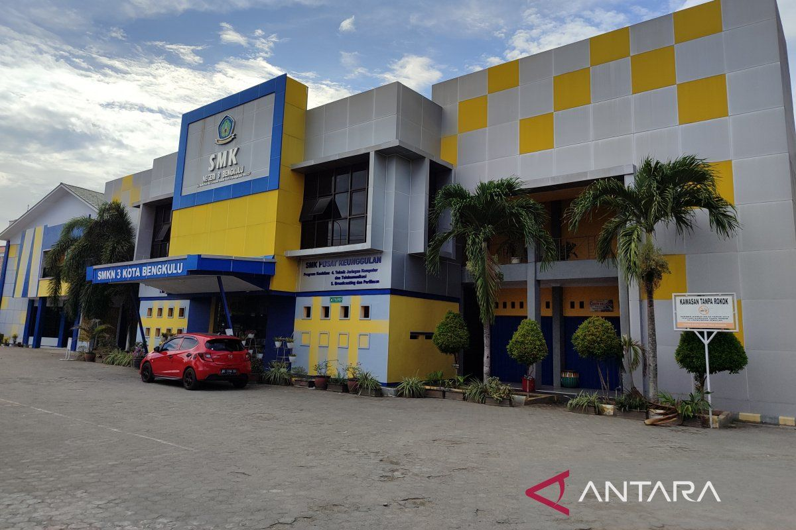

Selamat Datang di Website Resmi SMKN 3 Kota Bengkulu
SMK Negeri 3 Kota Bengkulu adalah sekolah kejuruan unggulan dengan akreditasi A, berlokasi di Jl. Jati No. 42, Padang Jati, Kec. Ratu Samban, Kota Bengkulu. Sekolah ini memiliki tenaga pendidik profesional lebih dari 120 orang, serta jumlah siswa mencapai lebih dari 1.500 dari berbagai jurusan keahlian.
SMKN 3 Bengkulu berkomitmen menjadi pusat pendidikan vokasi yang menyiapkan generasi muda agar memiliki keterampilan, etika, dan karakter unggul sesuai kebutuhan dunia kerja modern. Dengan fasilitas lengkap dan sistem pembelajaran berbasis kompetensi, sekolah ini terus berinovasi mencetak lulusan yang siap kerja, kreatif, dan berdaya saing tinggi.
Melalui website ini, Anda dapat menjelajahi profil sekolah, mengenal para guru, melihat data siswa, serta menghubungi pihak sekolah untuk berbagai informasi penting. Terima kasih telah mengunjungi situs resmi SMK Negeri 3 Kota Bengkulu.
